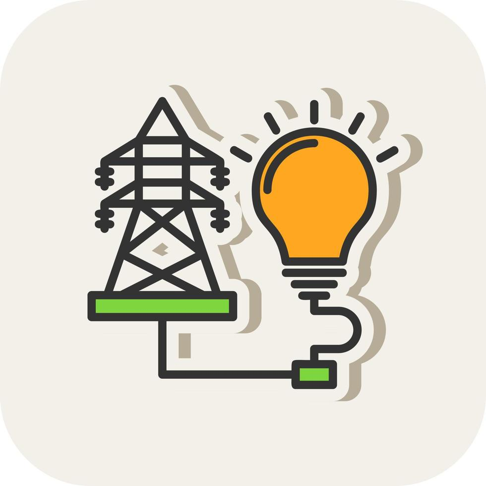
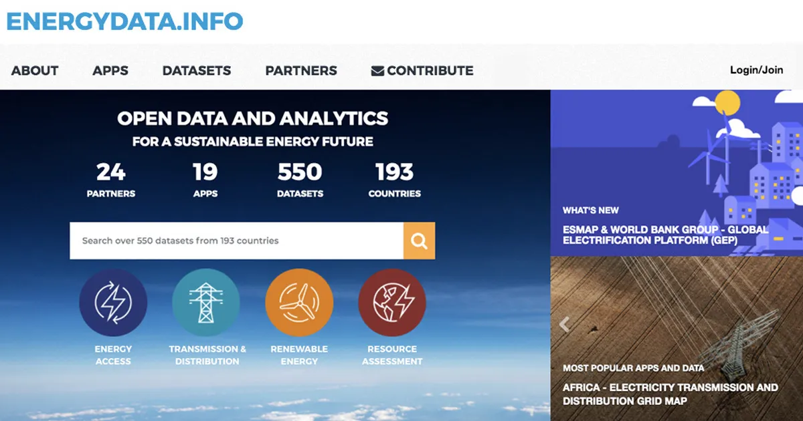

Reconoce tu gasto diario
Revisa el historial de consumos de tu hogar.
Ver referenciasBienvenidos a nuestro proyecto
Accede a datasets, mapas e indicadores clave sobre energías renovables, acceso a la energía y cambio climático. Toda la evidencia que gobiernos, empresas e investigadores necesitan para planificar el futuro, en un solo lugar.
Adquirir un plan Conocer la iniciativaUn caso ficticio para aprender HTML y CSS.


Proyectos existentes de la ODS.
ENERGYDATA.INFO es una plataforma de datos abiertos que proporciona acceso gratuito a conjuntos de datos y herramientas de analítica avanzada específicos para el sector energético global.
"Ser la plataforma de referencia mundial y el ecosistema de referencia en datos abiertos del sector energético, reconocida por ofrecer una experiencia de usuario accesible, eficiente y universal que impulse soluciones innovadoras para alcanzar energía asequible, segura y limpia en los 193 países.
El caso se vincula de forma pedagógica con el ODS 07 y el cuidado de los espacios de encuentro comunitario.
Un Ahorro sencillo
Revisa el historial de consumos de tu hogar.
Ver referenciasHaz una reflexión de los gastos del hogar.
Probar solicitudConsulta cómo sería la integración del día a día.
Ver la guíaConsultar planes de ahorro
Elige una categoría y revisa una referencia de demostración. No es un plan real.
Referencias inventadas. No se realizan búsquedas ni comprobaciones automáticas. La elección no se transfiere al formulario.
Cómo sería el servicio
La mesa de ayuda recibiría objetos encontrados sin exhibir detalles privados.
Una persona responsable revisaría los detalles de la solicitud.
Si existe coincidencia, se acordaría una devolución en un punto atendido.


“No era solo una libreta. Ahí estaba el dibujo que me hizo mi hija”.
Relato ficticio para representar la necesidad del usuario.
Adquirir Plan
Completa datos ficticios para probar el recorrido. En un servicio real, una persona revisaría tu solicitud antes de coordinar una entrega.
Esta práctica no guarda datos ni registra solicitudes. No ingreses información personal real.